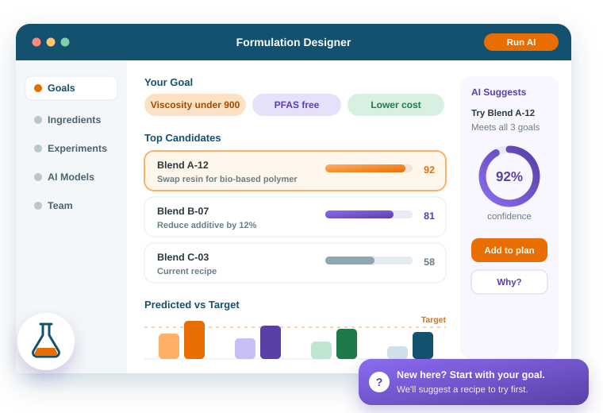

Product Management
Expanding Audiences
Citrine makes powerful software for scientists. But powerful can feel intimidating. I sat with the people who used it, learned where they felt lost, and worked with them to make the first experience feel guided and easy.

What I Did
Interviewed Customers
I interviewed scientists and their teams and mapped how a working day unfolds for each individual, to understand their realities.
Named the Pain Points
I turned those conversations into a short list of problems, ranked by how much they mattered to people.
Found New Audiences
Listening showed me two new groups of people the software could serve, beyond the specialists. I made sure the two products I brought to market, VirtualLab and Catalyst, spoke to them.
Built Early Buzz
I showed the designs back to customers early. Their feedback sharpened the work, and they were eager for it before it was ready.
Made Day One Easy
Friendly tips at each step let newcomers start on their own.
Results
Weeks of guided sessions.
A self-guided start.
More people actively using it.
More people succeeded on their first try.
Given back to each person, every day.